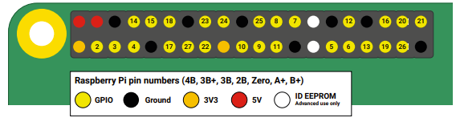
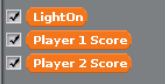
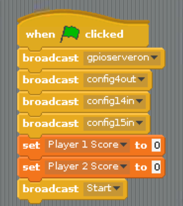
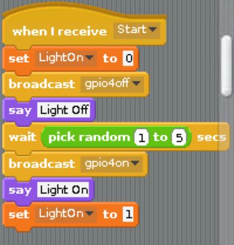
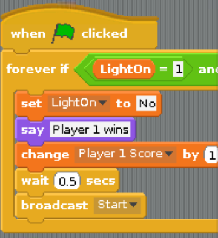
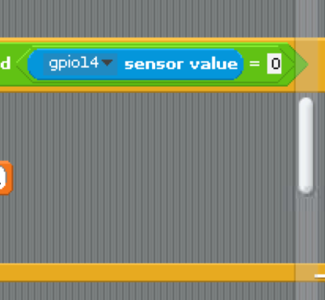
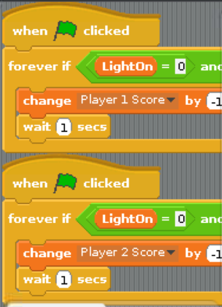
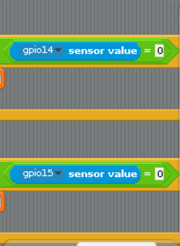

Velkommen til mitt Raspberry Pi prosjekt. Jeg valgte å lage et to spiller reaksjon spill. Spillet går ut på å være den første
som trykker på sin knapp når lyset skrues på. Jeg har tatt med poeng telling, og som en liten ekstra piff får man et minus poeng
hvis man trykker på knappen mens lyset er av. Jeg valgte å skrive koden i Scratch rett og slett fordi jeg aldri har brukt det før,
og mens jeg tittet på det kom det tuslende en liten gutt som syns den katten var veldig spennende. Da ble det til at jeg skrev
hele koden på nytt i Scratch. La oss ta en titt på hvordan prosjektet ble seendes ut.
Jeg går ut ifra at når du leser dette så har du satt opp din Raspberry Pi og gjort deg litt kjent med den.
Hvis du ikke har det anbefaler jeg at du ser på videoene til foreleser Michael før du fortsetter med dette prosjektet.
Jeg kommer ikke til å gå inn på selve installering og oppsett av Raspberry Pi. Vi går rett på den fysiske delen av
reaksjonsspillet vårt.
Slik som dette skal det set ut ferdig koblet.
For å bygge dette to spiller spillet trenger du:
Raspberry Pi
Breadboard
Fire male/female kabler
Tre male/male kabler
To knapper
En led lampe (i ønsket farge)
En 560 ohm resistor
Du kan enkelt legge til flere spillere hvis du ønsker. Du legger da til flere knapper (med tilhørende deler) og legger til flere kode
blokker i koden din. Husk da å lage flere variabler også som skal holde på poengsummene til de ekstra spillerene. Vi vil komme
nærmere inn på dette senere.
Jeg syns det var enklest å starte med å plassere knappene. Jeg plasserte dem på hver sin ende av brettet, slik at det vil være
enklere å trykke på dem med to hender på brettet samtidig. Av samme årsak, sørg for at knappene blir plassert på siden som
peker vekk fra din Raspberry Pi.
Sørg så for at du jorder begge knappene. Du tar da to male/male kabler og kobler de til hver sin knapp. Den ene enden til den ene
siden på knappen, og den andre enden til minus rekken som peker inn mot Raspberry Pi. Slik du kan se på bildet. Ved å trekke kablene
vekk fra knappene vil det bli enklere å komme til dem når man spiller.
For at det skal bli enklere å koble velger jeg å gjøre det i en litt "rar" rekkefølge. I stedet for å gjøre oss helt ferdige med knappene nå,
så går vi videre på lyset og setter strøm til knappene til slutt. Dette gjør jeg som sagt kun for at det skal bli enklere å komme
til på brettet mens vi kobler. På en større prosjekt med flere komponenter ville jeg imidlertid vært forsiktig med en slik fremgangsmåte.
Det er fort gjort å klemme en kabel eller resistor eller lignende når man "hopper" frem og tilbake på denne måten. En god tommelfinger regel
må være å gjøre seg helt ferdig med den delen man holder på med, før man går videre til neste del. Eller, ha en detaljert mal (slik som denne)
å følge.
Som du kan se på det første bildet her, så har led lyset to ben, hvor den ene er litt lenger enn den andre. Den korteste er jord (minus)
og den lengste en pluss. Sørg for å sette LED lyset den riktige veien. Plasser LED lyset cirka på midten av brettet ditt, med minus benet
(den korteste) pekende fra deg (oppover). Sett så en male/male kabel fra det korteste benet og bort til den samme minus siden av brettet
du satt de andre jord kablene.
Nå må vi koble en resistor til LED lyset. Dette må vi gjøre for å regulere hvor mye strøm lyset skal få. Hvis ikke kan det rett og slett
få for mye strøm og brenne seg. Jeg har da brukt en 560 ohm resistor. Den ene enden av resistiren setter du til plus siden av LED lyset
(det lengste benet), og den andre enden plasserer du noen rader vekk fra lyset. Slik som på bildet. Strømmen til lyset skal etterpå
kobles gjennom resistoren.
Siden vi har lagt alle jord (minus) kabler til en minusrekke på brettet vårt, trenger vi bare å koble én jord kabel fra Raspberry Pi og til
brettet. Ta da en male/female kabel og plasser den ene enden til samme minus rekke du har plassert de andre kablene på brettet, og den andre
enden til pin nummer 5 på den nederste rekken. Se bildet. Så skal vi sette strøm til lampen vår. Da tar du en ny male/female kabel og setter
den ene enden til samme rekke som den "løse" enden av resistoren på brettet, og den andre enden til pin nummer 4 på din Raspberry Pi.
Se bildet under med oversikt over pin nummerene.

Her ser du en oversikt over alle pin nummerne.
Det eneste som gjenstår da er å få strøm til knappene. Da bruker du de to siste male/female kablene til hver sin knapp. Den ene enden til den
ledige siden av knappen og den andre enden til pin nummer 14 for den ene knappen og pin nummer 15 for den andre knappen. Jeg ga den venstre
knappen pin nummer 14 og den høyre knappen (på bildet pekende opp) pin nummer 15.
Da har vi satt opp den fysiske delen av spillet vårt. La oss nå ta en titt på koden. Den er som sagt skrevet i Scratch. Det var flere versjoner å velge mellom,
men jeg brukte den versjonen som bare het "Scratch" og hvor logoen var hodet til katten. Husk å aktivere GPIO server når du åpner programmet. Det gjør du ved
å trykke på "Edit" øverst i vinduet. Og så på "Start GPIO server".


Start med å lage deg tre variabler. Lag to variabler som skal holde på hver spillers poensum, og en variabel som vi skal
bruke til å fortelle programmet vårt om lyset er av eller på. Hvis du har koblet på flere knapper for å få plass til flere
spillere, må du også øke antallet variabler for poengsum tilsvarende antall ekstra knapper. Du kan også velge å kalle variablene dine
noe annet enn det jeg har gjort. Foreksempel for at det skal være lettere å skille knappene fra hverandre og til riktig pin.
Da kan vi begynne å lage den første kode blokken. Her aktiverer vi pins og setter riktig kofigurering på de pinnene vi skal bruke.
Ut på lyset og inn på knappene. Så gir vi en verdi til poeng variablene. Vi starter med 0 poeng hver. Til slutt lager vi en
melding kalt "Start".

Her starter vi med å ta imot meldingen "Start". Så setter vi variabelen for lyset til av og gir beskjed om at pin 4 skal være av.
Altså pinnen tilhørende lyset. Jeg har valgt å gi katten et par "replikker". Dette er ikke et must. Du må gjerne sløyfe det hvis du vil,
eller skriv noe helt annet hvis du heller vil det. Deretter ber vi programmet ventet en tilfeldig valgt anntall sekunder mellom 1 og 5.
Du må gjerne også endre på denne differansen hvis du vil. Så skrur vi pinnen på og setter variabelen til på (1=True(På)/0=False(Av)).


Nå skal vi få programmet til å gjøre noe når det trykkes på knappene. Vi starter med hva som skjer når spillerne gjør det de skal gjøre, nemlig
å trykke på knappen sin når lyset skrur seg på. Vi lager én blokk for hver knapp. Starter med en "evig hvis" løkke. Til den legger vi til en "og"
operator. Så setter vi det ene argumentet til å være at variabelen vår for lyset er på (True=1) og det andre argumentet til at pinnen tilhørende
akkuratt denne knappen aktiveres. Altså når knappen trykkes på. Som du kan se på bildet så er den verdien = 0. Det er fordi knappene er "på" når de
ikke røres, og får da verdien 0 når de aktiveres (trykkes på). Hos meg en pin nummer 14 spiller nummer 1, og pin nummer 15 er spiller nummer 2. Når
disse to betingelsene møtes så skal variabelen for lyset skrus av og vinneren av runden skal annonseres og få et poeng. Pass da på at du skriver riktig
poeng variabel til riktig pin nummer. Deretter ber vi programmet om å vente litt før det går videre og starter på nytt. Denne blokken lager du like mange
ganger som du har knapper.


Nå skal vi fortelle hva som skal skje hvis spillerne trykker på knappen når lyset er av. Da skal de nemlig få et minus poeng. Denne blokken lager du
også like mange av som du har knapper. Husk å sette riktig spiller poengsum til riktig pin. Vi lager en ny "evig hvis" løkke og setter de samme
betingelsene som tidligere, bare at denne gangen skal variabelen for lyset ha verdi "0". Altså hvis knappen trykkes mens lyset er av. Da skal poeng variabelen til
den spilleren synke med 1. Vi ber også programmet om å vente i 1 sekund hvis dette skjer.
Når du har gjort dette er du ferdig med koden din. Da gjenstår det bare å slå vennenne dine ned i støvlene! Ha det gøy!
Prosjekter
Her kommer jeg til å fremstille mine prosjekter løpende. Ta gjerne en titt. Kanskje vi kan inspirere hverandre.